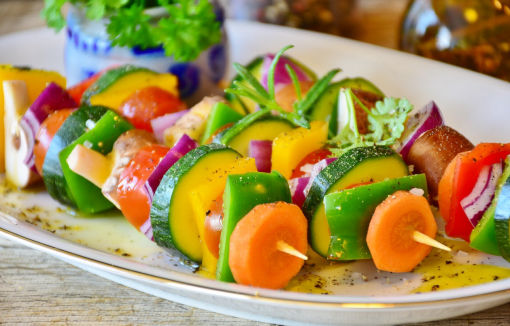

Galeria
pożywienie jest lekarstwem


Dlaczego jedni dobrze się czują jedząc pewne produkty a inni są po nich osłabieni? Czy dla wszystkich są wskazane zalecane diety i kuracje? Czy powinno się jeść surowe pokarmy albo mięso? To tylko nieliczne pytania, jakie się pojawiają. Odpowiedź zawsze jest taka sama --to zależy.
Każdy z nas ma inny obraz stanu zdrowia organizmu, jeden ciągle marznie kiedy inny „bucha gorącem”. Taki stan może się zmienić, dlatego tak ważna jest informacja, co warto jeść kiedy mi zimno a czego nie powinienem. Porada żywieniowa to porada związana z obecnym stanem organizmu. Niekiedy trzeba dołączyć suplementy a niekiedy z nich zrezygnować na korzyść czegoś naturalnego.
Przeprowadzając zabiegi odtruwające organizm, należy dodatkowo spożywać produkty wspomagające wydalanie toksyn oraz produkty zapewniające ich bezpieczne wydalanie. Jednym z najważniejszych priorytetów jest likwidacja stanów zapalanych, które są przyczyną wszystkich chorób przewlekłych. Czasem trzeba bardzo silnie dożywić niedomagający organizm. W takim przypadku ludzie potrzebują naturalnych suplementów (minerały, witaminy) oraz odpowiedniej diety zawierającej m.in. właściwe tłuszcze i wartościowe białka, dopóki różne braki nie zostaną odpowiednio uzupełnione. Czasem wystarczy tylko do jedzenia dorzucić parę ziół.
Niektóre symptomy wskazują na obecność w organizmie grzybów takich jak candida albicans czy aspergillusa niger. Również na podstawie objawów można ustalić, czy organizm jest przytruty przez pasożyty lub metale ciężkie.
Tradycyjna medycyna chińska żołądek uważała za cesarza, od którego zależało całe cesarstwo. Dzisiaj możemy w pełni podzielić takie poglądy. To co trafia do żołądka jest bardzo ważne ale w jaki sposób jest trawione odgrywa kluczową rolę ponieważ od tego zależy czy przyswoimy wartości odżywcze.